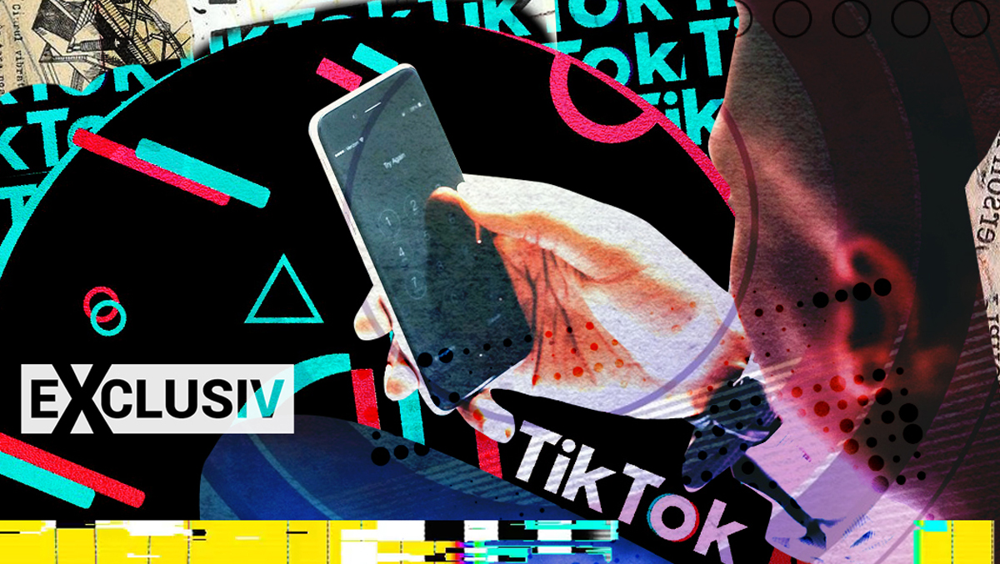

Despre TikTok
TikTok este o rețea de socializare și platformă de partajare de videoclipuri de scurtă durată. A fost lansată în 2016 de compania chineză ByteDance și este disponibilă în peste 150 de țări. Utilizatorii pot crea și partaja videoclipuri cu o durată de până la 60 de secunde, folosind o varietate de filtre, efecte și muzică.
De la lansare, TikTok a devenit extrem de popular, cu peste un miliard de utilizatori activi lunar. Platforma a fost descărcată de peste 2 miliarde de ori pe dispozitive mobile și a fost clasată ca a doua cea mai descărcată aplicație din lume în 2020.

Caracteristici TikTok
- Videoclipuri de scurtă durată cu o durată de până la 60 de secunde
- O gamă largă de filtre și efecte
- Posibilitatea de a adăuga muzică la videoclipuri
- Funcții de editare a videoclipurilor, cum ar fi tăierea și alipirea
- Sistem de recomandare algoritmizat pentru a descoperi și urmări conținutul preferat
Echipa TikTok
- Zhang Yiming - CEO
- Liang Rubo - CTO
- Xu Liang - CBO
- Shouzi Chew - CFO
- Vanessa Pappas - General Manager, TikTok US